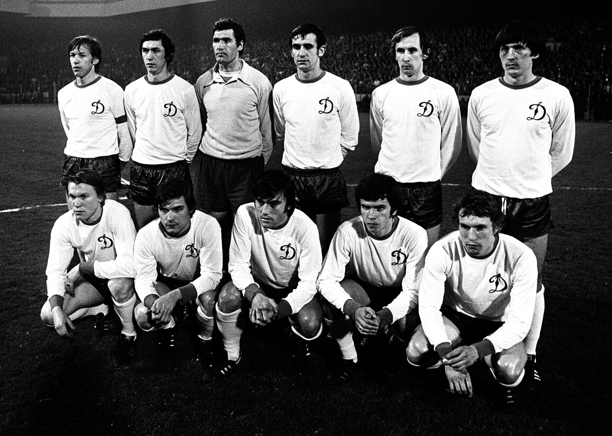
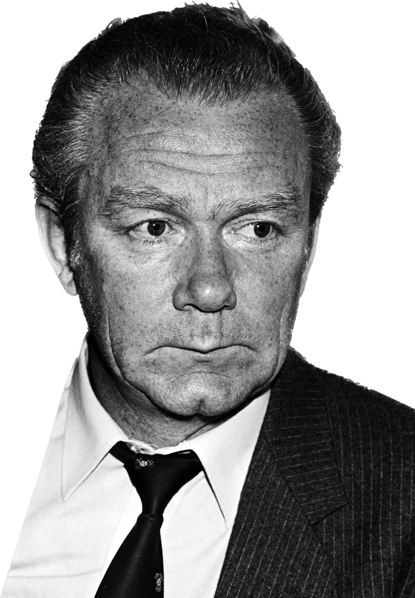

RALF RANGNICK
STEFFEN PRÖSSDORF · CC BY-SA 4.0
JUGADOR
ENTRENADOR
BACKNANG · ALEMANIA · JEDESTO · CC BY-SA 4.0

DINAMO DE KIEV · 23/04/1975 · ANEFO / NATIONAAL ARCHIEF · CC0
AMISTOSO
DINAMO DE KIEV

LOBANOVSKI
ENTRENADOR · 1985
ROB CROES / ANEFO · CC0
ALTO
CAMPO Y FICHAS: RECREACIÓN
RIVALES
0
RECREACIÓN
FOTOS: STEFFEN PRÖSSDORF (CC BY-SA 4.0), JEDESTO (CC BY-SA 4.0),
ROB CROES / ANEFO (CC0), ANEFO / NATIONAAL ARCHIEF (CC0), VÍA WIKIMEDIA COMMONS
CAMPO, FICHAS, CONTADOR Y SAQUE DE BANDA: RECREACIÓN